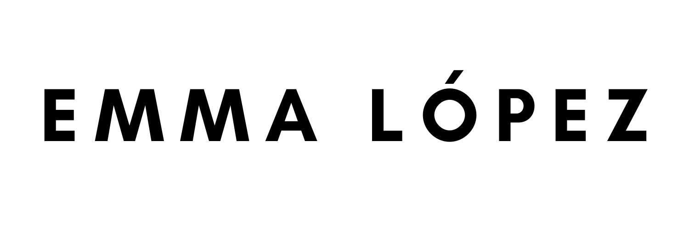
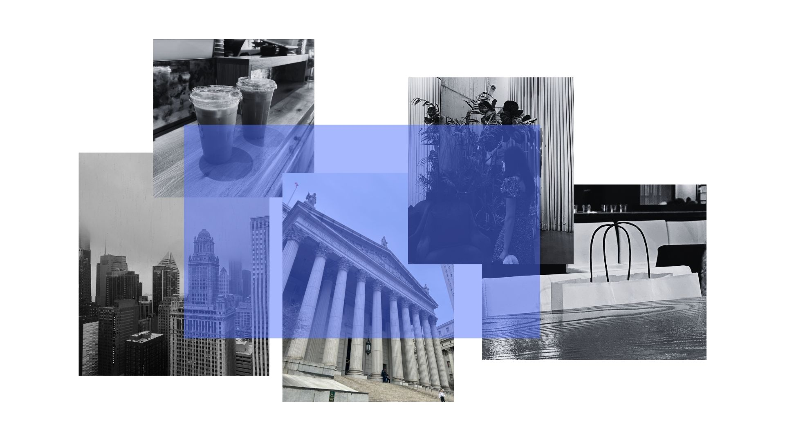

Chicago-based
Roots in México
¡Hola, Mundo! My name is Emma, and I'm currently a rising junior in high school interested in the intersection of computer science and public policy.
From data science, cybersecurity, to artifical intelligence/machine learning (AI/ML), I'm passionate about how technology can be leveraged to support marginalized communities.
In my free time, I enjoy reading, thrifting, watching Hallmark movies, listening to music, eating Mexican sweets, and drinking iced matcha lattes with oat milk!
Don't hesitate to email me at
emmavialopez@gmail.com or get in touch with me through one of the social media handles linked at the bottom. Scroll to learn more about me!
Founder @ Chicago Alianza Migrante May 2023—Present
Developing an iOS application that makes finding aid and resources more easier and efficient for migrants. Hosting bi-weekly donation drives to support Hispanic/Latino migrants in the Greater Chicago Area.
Educator @ Little League Coding Jan 2023—Present
Teaching students aged 5-12 Python on a weekly basis for 2 classes a week throughout 7 weeks.
Ambassador @ GirlCon Dec 2022—Present
Outreaching to the local Chicagoland area about an international conference dedicated to closing the gender gap in STEM.
Researcher + Editor @ iFeminist May 2022—Present
Researching articles about women in history to empower the next generation by exposing youth to unknown and underrepresented women. Editing to ensure articles are quality prior to publication.
Scholar @ Kode With Klossy Jul 2022—Aug 2023
Attended an in-person two-week coding intensive coding boot camp to experiment with data science and AI/ML. Procured final project dedicated to educating about environmental racism by utilzing Python, SQL, and Google Data Studio.
Student @ Girls Who Code Jul 2023—Aug 2023
Participated in a 6-week self-paced program to navigate projects ranging from web development, cybersecurity, to data science.
Global Fellow @ Columbia Journal of Science, Technology, Ethics, and Policy (STEP) Jan 2023—Jul 2023
Mentored by undergraduates at Columbia University and Barnard College by participating in weekly workshops dedicated to a STEP issue and developed a final project related to the ethics of non-fungible token (NFT) technology.
National Community Service Ambassador Award @ InnerView Jul 2023
Awarded to students who have dedicated 100+ hours of community service between 2023—2024.
Grant Recipient @ Riverside Brookfield Educational Foundation 2022—2023
Formed in 1987, a board of trustees distribute yearly grants to students pursuing educational enrichment at institutions over the summer.
Certificate of Recognition @ District 208 Board of Education May 2023
Recognized for achieving Northern Illinois Affiliate Winner at the National Center for Women + Information Technology (NCWIT) and National Cyber Scholarship Scholar at the National Cyber Scholarship Foundation (NCSF).
National Cyber Scholarship Scholar @ NCSF May 2023
Achieved 20,000+ points on CyberStart America, where "capture-the-flag" cybersecurity challenges were solved by studnets to gain points. Awarded $3,000+ towards cybersecurity education to recieve the GIAC (GFACT) certification.
Aspirations in Computing Northern Illinois Affiliate Winner @ NCWIT Feb 2023
Selected by significantly demonstrating a progression in computing experiences and technical skills, leadership in teams, clubs, and teaching peers, and participation in computing-related extracurricular activities.
A Honor Roll @ Riverside Brookfield High School 2021—2023
Maintained above a 4.0 grade-point average (GPA) during each quarter.
HTML, CSS, JavaScript, Java, Python, R, Swift
Website Development, iOS App Development, Cybersecurity, Data Science
Made with ♥ from Emma Lopez.
Copyright © 2023 Emma Lopez. All rights reserved.